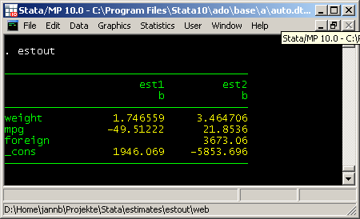

estout assembles a regression table from one or more models previously fitted and stored. The full syntax of estout is rather complex and is to be found in the help file. However, consider the following basic syntax, which includes only the most important options:
estout [ namelist ] [ using filename ] [ , cells(array) stats(scalarlist)
style(style) options ]
where namelist is a list of the names of stored estimation sets (the name list can be entered as * to refer to all stored estimates). The cells() and stats() options determine the primary contents of the table. The style() option determines the basic formatting of the table.
The general procedure for using estout is to first store several models using estimates store and then apply estout to display or save a table of the estimates. By default, estout displays a plain table of the coefficients of the models and uses SMCL tags and horizontal lines to structure the table. Example:
. sysuse auto
(1978 Automobile Data)
. regress price weight mpg
Source | SS df MS Number of obs = 74
-------------+------------------------------ F( 2, 71) = 14.74
Model | 186321280 2 93160639.9 Prob > F = 0.0000
Residual | 448744116 71 6320339.67 R-squared = 0.2934
-------------+------------------------------ Adj R-squared = 0.2735
Total | 635065396 73 8699525.97 Root MSE = 2514
------------------------------------------------------------------------------
price | Coef. Std. Err. t P>|t| [95% Conf. Interval]
-------------+----------------------------------------------------------------
weight | 1.746559 .6413538 2.72 0.008 .467736 3.025382
mpg | -49.51222 86.15604 -0.57 0.567 -221.3025 122.278
_cons | 1946.069 3597.05 0.54 0.590 -5226.245 9118.382
------------------------------------------------------------------------------
. estimates store m1
. regress price weight mpg foreign
Source | SS df MS Number of obs = 74
-------------+------------------------------ F( 3, 70) = 23.29
Model | 317252881 3 105750960 Prob > F = 0.0000
Residual | 317812515 70 4540178.78 R-squared = 0.4996
-------------+------------------------------ Adj R-squared = 0.4781
Total | 635065396 73 8699525.97 Root MSE = 2130.8
------------------------------------------------------------------------------
price | Coef. Std. Err. t P>|t| [95% Conf. Interval]
-------------+----------------------------------------------------------------
weight | 3.464706 .630749 5.49 0.000 2.206717 4.722695
mpg | 21.8536 74.22114 0.29 0.769 -126.1758 169.883
foreign | 3673.06 683.9783 5.37 0.000 2308.909 5037.212
_cons | -5853.696 3376.987 -1.73 0.087 -12588.88 881.4934
------------------------------------------------------------------------------
. estimates store m2
. estout *
--------------------------------------
m1 m2
b b
--------------------------------------
weight 1.746559 3.464706
mpg -49.51222 21.8536
foreign 3673.06
_cons 1946.069 -5853.696
--------------------------------------
. estimates clear
Alternatively, use eststo to store the models. Unlike estimates store, eststo can be used as a prefix command and does not require the user to specify names for the stored estimation sets. Furthermore, the estimation sets are automatically picked up by estout if they are stored by eststo. Example:
. eststo: quietly regress price weight mpg
(est1 stored)
. eststo: quietly regress price weight mpg foreign
(est2 stored)
. estout
--------------------------------------
est1 est2
b b
--------------------------------------
weight 1.746559 3.464706
mpg -49.51222 21.8536
foreign 3673.06
_cons 1946.069 -5853.696
--------------------------------------
Note that what appears as dashed lines here, are solid lines in Stata's Results window or the Viewer:

If using is specified, estout writes a raw tab-delimited table (without SMCL tags and without lines) to the indicated file:
. estout using example.txt
(output written to example.txt)
. type example.txt
est1 est2
b b
weight 1.746559 3.464706
mpg -49.51222 21.8536
foreign 3673.06
_cons 1946.069 -5853.696
. eststo clear
The table looks messy in the Stata results window or the Stata log because the columns are tab-separated (note that tab characters are not preserved in the results window or the log). However, the table would look tidy if "example.txt" were opened, for example, in a spreadsheet program.
estout has a style() option to set the basic format of the table. The default style for screen display is the smcl style. The default export style (i.e. if using is specified) is the tab style. (See the examples above.) Other predefined styles are fixed, tex, and html, but it is also possible to define one's own styles (see Defaults files in the documentation). The tex style, for example, modifies the output table for use with LaTeX's tabular environment:
. sysuse auto
(1978 Automobile Data)
. eststo: quietly regress price weight mpg
(est1 stored)
. eststo: quietly regress price weight mpg foreign
(est2 stored)
. estout, style(tex) varlabels(_cons \_cons)
& est1& est2\\
& b& b\\
weight & 1.746559& 3.464706\\
mpg & -49.51222& 21.8536\\
foreign & & 3673.06\\
\_cons & 1946.069& -5853.696\\
. eststo clear
(Note that _cons has been replaced by its LaTeX equivalent in the example above using the varlabels() option (the underscore character produces an error in LaTeX unless it is preceded by a backslash). For more information on the varlabels() option, see estout's Labeling options.)
Use the cells() option to specify the parameter statistics to be tabulated and how they are to be arranged. The parameter statistics available are b (point estimates; the default), se (standard errors), t (t-/z-statistics), p (p-values), ci (confidence intervals; to display the lower and upper bounds in separate cells use ci_l and ci_u), as well as any additional parameter statistics included in the e()-returns for the models (see estout's Parameter Statistics options). For example, cells(b se) results in the reporting of raw coefficients and standard errors:
. sysuse auto
(1978 Automobile Data)
. eststo: quietly regress price weight mpg
(est1 stored)
. eststo: quietly regress price weight mpg foreign
(est2 stored)
. estout, cells(b se)
--------------------------------------
est1 est2
b/se b/se
--------------------------------------
weight 1.746559 3.464706
.6413538 .630749
mpg -49.51222 21.8536
86.15604 74.22114
foreign 3673.06
683.9783
_cons 1946.069 -5853.696
3597.05 3376.987
--------------------------------------
Multiple statistics are placed in separate rows beneath one another by default as in the example above. However, elements that are listed in quotes or in parentheses are placed beside one another. For example, specifying cells("b se t p") or, equivalently, cells((b se t p)) produces the following table:
. estout est2, cells("b se t p")
----------------------------------------------------------------
est2
b se t p
----------------------------------------------------------------
weight 3.464706 .630749 5.493003 5.99e-07
mpg 21.8536 74.22114 .2944391 .7692938
foreign 3673.06 683.9783 5.370142 9.72e-07
_cons -5853.696 3376.987 -1.733408 .0874262
----------------------------------------------------------------
The two approaches can be combined. For example, cells("b p" se) or cells((b p) se) produces a table with raw coefficients and standard errors beneath one another in the first column and p-values in the top row of the second column for each model:
. estout, cells("b p" se)
----------------------------------------------------------------
est1 est2
b/se p b/se p
----------------------------------------------------------------
weight 1.746559 .0081298 3.464706 5.99e-07
.6413538 .630749
mpg -49.51222 .5673237 21.8536 .7692938
86.15604 74.22114
foreign 3673.06 9.72e-07
683.9783
_cons 1946.069 .5901886 -5853.696 .0874262
3597.05 3376.987
----------------------------------------------------------------
For each statistic named in the cells() option a set of suboptions may be specified in parentheses. For example, in social sciences it is common to report standard errors or t-statistics in parentheses beneath the coefficients and to indicate the significance of individual coefficients with stars. Furthermore, the results are rounded. Just such a table can be created as follows:
. estout, cells(b(star fmt(3)) t(par fmt(2)))
--------------------------------------------
est1 est2
b/t b/t
--------------------------------------------
weight 1.747** 3.465***
(2.72) (5.49)
mpg -49.512 21.854
(-0.57) (0.29)
foreign 3673.060***
(5.37)
_cons 1946.069 -5853.696
(0.54) (-1.73)
--------------------------------------------
. eststo clear
The estout default is to display * for p<.05, ** for p<.01, and *** for p<.001. However, note that the significance thresholds and symbols are fully customizable (see estout's Significance stars options).
Finally, use the stats() option to specify scalar statistics to be displayed for each model in the table footer. The available scalar statistics are aic (Akaike's information criterion), bic (Schwarz's information criterion), rank (the rank of e(V), i.e. the number of free parameters in model), p (the p-value of the model), as well as any scalar contained in the e()-returns for the models (see estout's Summary statistics options). Type ereturn list after estimating a model to see a list of the returned results.
For example, specify stats(r2 bic N) to add the R-squared, BIC, and the number of cases:
. sysuse auto
(1978 Automobile Data)
. eststo: quietly regress price weight mpg
(est1 stored)
. eststo: quietly regress price weight mpg foreign
(est2 stored)
. estout, stats(r2 bic N)
--------------------------------------
est1 est2
b b
--------------------------------------
weight 1.746559 3.464706
mpg -49.51222 21.8536
foreign 3673.06
_cons 1946.069 -5853.696
--------------------------------------
r2 .2933891 .4995594
bic 1378.64 1357.414
N 74 74
--------------------------------------
. eststo clear
Note that you may also tabulate string scalars contained in e(), so called e()-macros. Example:
. sysuse auto
(1978 Automobile Data)
. eststo: quietly regress price weight
(est1 stored)
. eststo: quietly regress price weight, robust
(est2 stored)
. eststo: quietly regress price weight, vce(bootstrap)
(est3 stored)
. estout, cells(b se(par)) stats(N vce)
---------------------------------------------------
est1 est2 est3
b/se b/se b/se
---------------------------------------------------
weight 2.044063 2.044063 2.044063
(.3768341) (.3897465) (.4541801)
_cons -6.707353 -6.707353 -6.707353
(1174.43) (1032.394) (1193.098)
---------------------------------------------------
N 74 74 74
vce ols robust bootstrap
---------------------------------------------------
. eststo clear
The label option will cause estout to use variable labels and model labels, if available, and legend will display a legend explaining the significance symbols and thresholds. Furthermore, there are various options for specifying custom labels for the different table elements. The following example is intended to provide a first impression of these possibilities:
. sysuse auto
(1978 Automobile Data)
. eststo, title("Model 1"): quietly regress price weight mpg
(est1 stored)
. eststo, title("Model 2"): quietly regress price weight mpg foreign
(est2 stored)
. label variable foreign "Car type (1=foreign)"
. estout, cells("b(star label(Coef.)) se(label(Std. err.))") ///
> stats(r2 N, labels(R-squared "N. of cases")) ///
> label legend varlabels(_cons Constant)
------------------------------------------------------------------------------
Model 1 Model 2
Coef. Std. err. Coef. Std. err.
------------------------------------------------------------------------------
Weight (lbs.) 1.746559** .6413538 3.464706*** .630749
Mileage (mpg) -49.51222 86.15604 21.8536 74.22114
Car type (1=foreign) 3673.06*** 683.9783
Constant 1946.069 3597.05 -5853.696 3376.987
------------------------------------------------------------------------------
R-squared .2933891 .4995594
N. of cases 74 74
------------------------------------------------------------------------------
* p<0.05, ** p<0.01, *** p<0.001
. eststo clear
The fmt() suboption in cells() and stats() can be used to determine the display formats of the tabulates statistics. Available format specifications are official Stata's display formats, such as %9.0g or %8.2f (see help format), integer numbers to request a fixed format, or a#, where # is in {1,2,...,9}, to use an adaptive format (see the Numerical formats section in the help file).
. sysuse auto
(1978 Automobile Data)
. eststo: quietly regress price weight mpg
(est1 stored)
. eststo: quietly regress price weight mpg foreign
(est2 stored)
. estout, cells(b(fmt(a3)) t(fmt(2) par)) stats(r2 N, fmt(3 0))
--------------------------------------
est1 est2
b/t b/t
--------------------------------------
weight 1.747 3.465
(2.72) (5.49)
mpg -49.51 21.85
(-0.57) (0.29)
foreign 3673.1
(5.37)
_cons 1946.1 -5853.7
(0.54) (-1.73)
--------------------------------------
r2 0.293 0.500
N 74 74
--------------------------------------
Note that it is possible to specify individual formats for the coefficients:
. estout, cells(b(fmt(6 1 3 1)))
--------------------------------------
est1 est2
b b
--------------------------------------
weight 1.746559 3.464706
mpg -49.5 21.9
foreign 3673.060
_cons 1946.1 -5853.7
--------------------------------------
. eststo clear